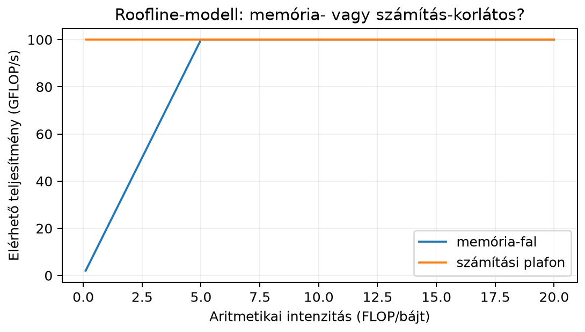

Amikor egy neurális háló rétegét mátrixszorzásként írjuk fel, könnyű azt hinni, hogy a futásidőt csak a szorzások és összeadások száma, vagyis a FLOP határozza meg. A gyakorlatban azonban egy nagy mátrixszorzásnál az adatokat folyamatosan mozgatni kell a főmemória, a gyorsítótárak és a számolóegységek között. Egy modern processzor vagy GPU gyakran sokkal hamarabb „éhezik” adatra, mint ahogy a szorzásokat elvégezné: a mátrixszorzás sebességét ezért leggyakrabban nem a szorzások száma, hanem a memóriamozgatás dönti el.
Ebben az alfejezetben azt vizsgáljuk meg, hogyan lehet jellemezni egy mátrixszorzás memóriaigényét, miért segít a blokkos (tiled) feldolgozás, és mit csinálnak a jól optimalizált BLAS/GEMM könyvtárak.
A roofline-modell két mennyiséget állít szembe: a hardver számítási csúcsteljesítményét és a memória-sávszélességét. Ha egy művelet sok számolást végez kevés adatmozgatáshoz képest, akkor a számítási kapacitás a szűk keresztmetszet. Ha viszont kevés számolás jut egy-egy beolvasott bájtra, akkor a memória sávszélessége korlátoz.
Az alábbi ábra egy illusztratív roofline-görbét mutat. A vízszintes tengelyen az aritmetikai intenzitás, a függőleges tengelyen az elérhető teljesítmény szerepel.

A görbén a ferde szakasz a memória-fal: itt a teljesítményt a sávszélesség korlátozza. A vízszintes szakasz a számítási plafon: itt hiába növeljük tovább az intenzitást, a hardver nem tud több lebegőpontos műveletet végezni. A kettő metszéspontja a fordulópont.
Definíció (aritmetikai intenzitás).
Legyen
egy művelet által elvégzett hasznos lebegőpontos műveletek száma,
pedig a főmemória és a gyorsítótárak/regiszterek között mozgatott bájtok
teljes mennyisége. Az aritmetikai intenzitás
mértékegysége FLOP/bájt.
Négyzetes
-es
mátrixok szorzásánál
,
mert minden
eredményelemhez
szorzat és
összeadás tartozik. Ha minden mátrixelemet legalább egyszer be kell
olvasni vagy ki kell írni, akkor az ideális
a három mátrix méretéből adódik:
,
ahol
egy szám tárolásának mérete bájtban. float32 esetén
,
így
float64 esetén ugyanez
,
mert egy szám 8 bájton tárolódik.
Az az egyszeri adatmozgatási modellben elérhető maximális aritmetikai intenzitás, nem a tényleges és nem a roofline felső korlátja. A roofline felső korlátja a képlet, a fordulópont pedig . A rossz lokalitású megvalósítás tényleges -ja kisebb lehet, ezért a mért teljesítmény is a memória-fal alatt maradhat.
Definíció (roofline-modell).
Ha a hardver számítási csúcsteljesítménye
(FLOP/s), memória-sávszélessége pedig
(bájt/s), akkor egy
aritmetikai intenzitású művelet elérhető teljesítménye legfeljebb
A fordulópontot az érték adja. Ha , a művelet memória-korlátos (memory-bound); ha , akkor számítás-korlátos (compute-bound).
A fenti ábrán GFLOP/s és GB/s, ezért FLOP/bájt.
Legyen
,
és tároljuk őket float32 formátumban. A szorzás
műveletigénye:
A minimális bájttorgalom, ha minden mátrixot csak egyszer olvasunk be, illetve írunk ki:
Az aritmetikai intenzitás:
Ugyanezt a képlet is megadja: . Ha egy gép GB/s sávszélességgel és GFLOP/s számítási csúccsal rendelkezik, akkor FLOP/bájt. Mivel , ez a szorzás ideális esetben számítás-korlátos. Ha azonban a gyorsítótárat rosszul használjuk, a valós jóval nagyobb lehet, és az effektív lecsökkenhet.
A mátrixszorzás legegyszerűbb Python-szerű alakja három egymásba ágyazott ciklus:
A három ciklus hatféle sorrendben írható fel. Matematikailag mind ugyanazt az eredményt adja, de teljesítményben óriási lehet a különbség.
Tegyük fel, hogy a mátrixok soronként, azaz C-sorrendben (NumPy
alapértelmezés) vannak a memóriában. Ha a ciklussorrend
i, j, k, akkor a legbelső ciklus k-ban fut.
Ekkor a
mátrixból egy oszlopot járunk be: a
elemek a memóriában egymástól
elememnyire helyezkednek el. Egy gyorsítótár-sor betöltésekor így a
sorból csak egyetlen elemet használunk fel, a többit kidobjuk. Ez nagyon
sok felesleges memóriaforgalmat okoz.
Ha viszont a sorrend i, k, j, akkor a legbelső ciklus
j-ben fut. Ekkor
konstans a belső ciklusban,
egy sorát és
egy sorát folytonosan járjuk be. Ez sokkal jobb térbeli
lokalitást ad, ezért a gyorsítótárak sokkal hatékonyabban
működnek.
| Ciklussorrend | Belső ciklus | Jellemző |
|---|---|---|
i, j, k |
k |
oszlopa strided, sok gyorsítótár-miss |
i, k, j |
j |
és sora folytonos, jobb lokalitás |
k, i, j |
j |
-t ismételten olvassuk/írjuk, több memóriaforgalom |
A valódi BLAS-könyvtárak ennél is továbbmennek: nem sorokkal, hanem blokkokkal dolgoznak.
A blokkos vagy tiled mátrixszorzás alapötlete, hogy a nagy mátrixokat kis -s blokkokra osztjuk, és a szorzást blokkonként végezzük el. Ha jól van megválasztva, akkor a szükséges - és -blokkok egyszerre a gyorsítótárban maradnak, ezért minden blokk elemet többször is fel lehet használni anélkül, hogy újra a főmemóriából kellene behozni.
A blokkos szorzás vázlata:
ahol , és mind -s blokkok.
Legyen
Osszuk mindkét mátrixot méretű blokkokra:
Az első blokk eredménye:
Behelyettesítve:
A második blokk hasonlóan:
A teljes szorzat:
A blokkos elrendezés lényege itt is az, hogy ha -t és -t egyszer betöltöttük a gyorsítótárba, akkor a -s blokk minden eleme darab szorzáshoz újra felhasználható.
Állítás. Ideális esetben egy négyzetes,
-es
float32 mátrixszorzás aritmetikai intenzitása
FLOP/bájt. Ha a megvalósítás rossz lokalitású, ugyanaz a művelet ennél
kisebb effektív
-t
eredményez.
Bizonyítás. A mátrixszorzás
szorzást és körülbelül
összeadást végez, tehát
.
A bemeneteket és a kimenetet legalább egyszer mozgatni kell:
,
és
összesen
elemet tartalmaz. float32 esetén ez
bájt. Így
A naiv i,j,k sorrend azért teljesít rosszul, mert a
oszlopaiból származó elemekhez tartozó gyorsítótár-sorokból csak egy-egy
elemet használunk. Ilyenkor a tényleges
többszöröse lehet
-nek,
ezért az effektív
lecsökken, és a művelet a memória-korlátos tartományba kerül. A blokkos
szorzás célja, hogy a gyorsítótárban tartva a blokkokat a gyakorlatban
is megközelítsük az
értéket.
A következő NumPy-kód a fenti
-es
blokkos példát számítja ki, és összehasonlítja a beépített
@ eredményével.
import numpy as np
def matmul_blocked(A, B, b):
A = np.asarray(A)
B = np.asarray(B)
if A.ndim != 2 or B.ndim != 2:
raise ValueError("A és B kétdimenziós tömb kell legyen")
if A.shape[1] != B.shape[0]:
raise ValueError(
f"belső méretek nem egyeznek: {A.shape[1]} != {B.shape[0]}")
if not isinstance(b, (int, np.integer)) or isinstance(b, bool) or b <= 0:
raise ValueError("a blokkméret pozitív egész kell legyen")
if np.issubdtype(A.dtype, np.integer) and np.issubdtype(B.dtype, np.integer):
dtype = np.result_type(A.dtype, B.dtype, np.int64)
else:
dtype = np.result_type(A.dtype, B.dtype)
A = A.astype(dtype, copy=False)
B = B.astype(dtype, copy=False)
m, n = A.shape
_, p = B.shape
C = np.zeros((m, p), dtype=dtype)
for i in range(0, m, b):
for k in range(0, n, b):
Aik = A[i:i+b, k:k+b]
for j in range(0, p, b):
C[i:i+b, j:j+b] += Aik @ B[k:k+b, j:j+b]
return C
A = np.array([[1, 2, 3, 4],
[5, 6, 7, 8],
[9, 0, 1, 2],
[3, 4, 5, 6]])
B = np.array([[1, 0, 2, 1],
[0, 1, 1, 2],
[2, 0, 1, 0],
[1, 2, 0, 1]])
C = matmul_blocked(A, B, b=2)
print(C)
print(np.array_equal(C, A @ B))Várt kimenet:
[[11 10 7 9]
[27 22 23 25]
[13 4 19 11]
[19 16 15 17]]
TrueA shape- és dtype-ellenőrzés külön is kipróbálható:
try:
matmul_blocked(np.ones((2, 3)), np.ones((4, 2)), 2)
except ValueError as e:
print("shape-hiba:", e)
A32 = np.ones((2, 3), dtype=np.float32)
B32 = np.ones((3, 2), dtype=np.float32)
print("float32 dtype:", matmul_blocked(A32, B32, 2).dtype)
A8 = np.ones((2, 3), dtype=np.int8)
B8 = np.ones((3, 2), dtype=np.int8)
print("int8 dtype:", matmul_blocked(A8, B8, 2).dtype)
print("int/float dtype:", matmul_blocked(A8, B32, 2).dtype)Várt kimenet:
shape-hiba: belső méretek nem egyeznek: 3 != 4
float32 dtype: float32
int8 dtype: int64
int/float dtype: float32A következő kód két külön dolgot mutat be. Egyrészt
becslést ad a szorzás ideális aritmetikai intenzitására
a mátrixméretekből (byte itt az A, B és C egyszeri
beolvasására/kiírására vonatkozó ideális bájtszám, nem mért
memóriaforgalom). Másrészt időmérést végez, amelyet melegítő futás, több
ismétlés és a medián használata tesz összehasonlíthatóbbá; az
adatgenerálás a mért szakaszon kívül történik. A mért idő és GFLOP/s
továbbra is gép-, BLAS- és szálszámfüggő, ezért nem adunk meg rögzített
várt értéket.
import numpy as np
import time
rng = np.random.default_rng(0)
m = k = n = 1024
A = rng.standard_normal((m, k), dtype=np.float32)
B = rng.standard_normal((k, n), dtype=np.float32)
flop = 2 * m * k * n
byte = (A.size + B.size + m * n) * 4 # ideális bájtszám, nem mért forgalom
ai = flop / byte
print("AI (ideális becslés) =", round(ai, 2), "FLOP/byte")
# Melegítő futás: a könyvtár inicializálása ne a mért szakaszba essen
C = A @ B
_ = A @ B
ismetlesek = 7
idok = []
for _ in range(ismetlesek):
t0 = time.perf_counter()
C = A @ B
t1 = time.perf_counter()
idok.append(t1 - t0)
median_ido = float(np.median(idok))
print("C alakja:", C.shape)
print("ismétlések:", ismetlesek)
print("medián idő (gépfüggő):", round(median_ido, 4), "s")
print("mediánból becsült teljesítmény (gépfüggő):",
round(flop / median_ido / 1e9, 2), "GFLOP/s")Az AI = 170.67 FLOP/byte érték a méretekből számított
ideális becslés, amely feltételezi, hogy A-t és B-t
egyszer olvassuk be, C-t egyszer írjuk ki, és a gyorsítótár-tartalom
gyakorlatilag végtelen. A tényleges memóriaforgalom és cache-viselkedés
ennél több lehet, ezért a bájt/AI értékből nem következtethetünk mért
sávszélességre vagy cache-forgalomra. A @ hívás a legtöbb
NumPy-telepítésben optimalizált BLAS/GEMM rutint használ, ezért sokkal
gyorsabb, mint egy naiv Python-hármasciklus. Az időmérés mediánja is
csak az adott gépen, az adott BLAS-verzióval és szálszámmal érvényes;
két környezet összehasonlításához mindkettőt dokumentálni kell.
A transformer-architektúrában a figyelemmechanizmus számítja a , , vetületeket, majd a pontszám-mátrixot
formában. Egy batchből, fejből és tokenből álló, fejdimenziójú esetben a tenzoralakok:
A pontszám-mátrix műveletigénye fejenként és mintánként
flop, tehát összesen körülbelül
.
A beolvasott
és
mérete
,
a kiírt
mérete
.
Az ideális aritmetikai intenzitás float32 esetén:
Ha például és , akkor FLOP/bájt. Ez sok gépen számítás-korlátos lehet. Rövid szekvenciáknál, például , esetén viszont FLOP/bájt, ami már közelebb lehet a memória-korlátos tartományhoz.
A sűrű rétegeknél hasonló elemzés végezhető. Az művelet kis batch-méretnél és nagy súlymátrixnál gyakran memória-korlátos, mert a súlymátrix beolvasása dominálja a bájtforgalmat. Ezért az inferencia-gyorsító munkánál mindig érdemes a FLOP-ok mellett a bájtforgalmat is megbecsülni.
A GPU-k mátrixszorzó egységei (tensor core-ok) kis mátrixblokkok szorzás-összeadását egyetlen lépésként végzik, jellemzően csökkentett pontosságú bemenetekkel (FP16, BF16, int8) és nagyobb pontosságú felhalmozással; a pontos blokkméretek és támogatott formátumok hardvergenerációnként eltérnek (ellenőrzési igénnyel). Az alacsony pontosság a bájtforgalmat is csökkenti: ha egy szám bájt helyett, ugyanannak a szorzásnak a értéke feleződik, tehát az aritmetikai intenzitása kétszeresére nő. Ezért kapcsolódik a gyors mátrixszorzás a 23.2. alfejezet (Kvantálás lineáris algebrai szemmel) témájához.
Csak a FLOP-ot nézzük. A mátrixszorzás futtatási idejét sok esetben a memória-sávszélesség határozza meg. Ha az a fordulópont alatt van, hiába növeljük a számolási kapacitást, a futásidő alig javul.
A ciklussorrendet közömbösnek gondoljuk.
Matematikailag mindegy, de a memória-hozzáférési mintában nem. Az
i,j,k sorrend
oszlopait strided módon járja be, ami sok gyorsítótár-misshez
vezet.
Az ideális -t valós teljesítményként kezeljük. Az képlet csak akkor érvényes, ha minden mátrixelemet gyakorlatilag egyszer mozgatunk. A naiv kód ennél jóval nagyobb forgalmat okozhat.
Túl nagy blokkméretet választunk. A blokkolás akkor hatékony, ha a szükséges -, - és -blokkok elférnek a gyorsítótárban. Ha túl nagy, a blokkok kiszorulnak, és a módszer elveszti előnyét.
Magyarázd el, miért jobb általában az i,k,j
ciklussorrend az i,j,k sorrendnél soronként tárolt mátrixok
esetén.
Számítsd ki egy
-os
float32 mátrixszorzás ideális aritmetikai intenzitását
FLOP/bájtban.
Írj egy matmul_blocked(A, B, b) függvényt, amely blokkos
mátrixszorzást végez. Ellenőrizd egy
-ös
és egy
-es
véletlen egész mátrixon, hogy az eredmény megegyezik az
A @ B eredményével.
Egy már betanított sűrű réteg inferencia közben egyetlen mintát dolgoz fel:
Tegyük fel, hogy
,
és
mind float32. Becsüld meg a művelet aritmetikai
intenzitását, és döntsd el, hogy egy
GB/s,
GFLOP/s paraméterű gépen memória- vagy számítás-korlátos-e a
művelet.
Soronkénti tárolásnál az i,j,k sorrend legbelső ciklusa
a
elemeken fut, amelyek egy oszlop mentén helyezkednek el. A memóriában
ezek nem folytonosak, ezért minden gyorsítótár-sorból csak kevés elem
hasznosul. Az i,k,j sorrend belső ciklusa
-t
szerint járja be, ami folytonos memóriát jelent, így jobb a térbeli
lokalitás és kevesebb a gyorsítótár-miss.
Négyzetes float32 esetén:
Egy lehetséges megoldás:
import numpy as np
def matmul_blocked(A, B, b):
A = np.asarray(A)
B = np.asarray(B)
if A.ndim != 2 or B.ndim != 2:
raise ValueError("A és B kétdimenziós tömb kell legyen")
if A.shape[1] != B.shape[0]:
raise ValueError(
f"belső méretek nem egyeznek: {A.shape[1]} != {B.shape[0]}")
if not isinstance(b, (int, np.integer)) or isinstance(b, bool) or b <= 0:
raise ValueError("a blokkméret pozitív egész kell legyen")
if np.issubdtype(A.dtype, np.integer) and np.issubdtype(B.dtype, np.integer):
dtype = np.result_type(A.dtype, B.dtype, np.int64)
else:
dtype = np.result_type(A.dtype, B.dtype)
A = A.astype(dtype, copy=False)
B = B.astype(dtype, copy=False)
m, n = A.shape
_, p = B.shape
C = np.zeros((m, p), dtype=dtype)
for i in range(0, m, b):
for k in range(0, n, b):
Aik = A[i:i+b, k:k+b]
for j in range(0, p, b):
C[i:i+b, j:j+b] += Aik @ B[k:k+b, j:j+b]
return C
rng = np.random.default_rng(1)
A = rng.integers(-2, 3, size=(6, 5))
B = rng.integers(-2, 3, size=(5, 4))
C = matmul_blocked(A, B, 2)
print(np.array_equal(C, A @ B))A kimenet True, ha a blokkos szorzás helyes.
A műveletigény:
A beolvasott/kiírt elemek száma:
float32 esetén a bájttorgalom:
Az aritmetikai intenzitás:
A fordulópont FLOP/bájt. Mivel , a művelet erősen memória-korlátos. Kis batch-méretnél tehát a súlymátrix beolvasása dominál, nem a szorzások száma.
A mátrixszorzás sebességét a számolási munka mellett a
memóriaforgalom határozza meg. Az aritmetikai intenzitás a hasznos
FLOP-ok és a mozgatott bájtok hányadosa. A roofline-modell szerint a
teljesítmény legfeljebb
lehet, ahol
a számítási csúcs,
a memória-sávszélesség. Az ideális float32 négyzetes
mátrixszorzás aritmetikai intenzitása
FLOP/bájt. A blokkos szorzás azért hatékony, mert a kis blokkokat a
gyorsítótárban tartva növeli az adat-újrafelhasználást, és csökkenti a
főmemóriából való ismételt beolvasást. A BLAS/GEMM könyvtárak ezt az
elvet kombinálják ciklusátrendezéssel, vektorizálással és többmagos
végrehajtással.
float32 négyzetes szorzás:
.A roofline-modell klasszikus forrása S. Williams, A. Waterman, D.
Patterson, Roofline: An Insightful Visual Performance Model for
Multicore Architectures, Communications of the ACM, 2009. A
gyorsítótár-működés és a mátrixszorzás optimalizálásának hardveres
háttere megtalálható J. L. Hennessy, D. A. Patterson, Computer
Architecture: A Quantitative Approach című könyvében. A BLAS/GEMM
viselkedése gyártónként és könyvtárverziónként változik; a NumPy
@ művelet mögötti konkrét BLAS-hívás a telepített
NumPy-változattól függ. A fejezetben szereplő
és
értékek illusztratívak, nem mért adatok.